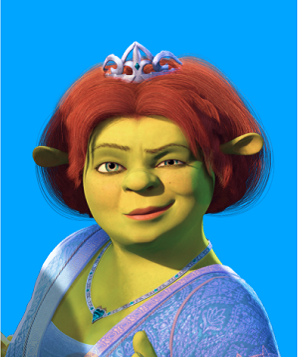

Шрек (англ. Shrek) — заглавный герой одноимённой серии фильмов и игр,
это огромный зелёный огр, который живёт на болоте, в окрестностях
города-государства Дюлок, населённого людьми, животными, куклами и др.
из разных европейских сказок и легенд. Людей он, по доброте душевной, не ест, но его самолюбие греет тот факт, что при виде него все бросаются врассыпную.
Фиона

Принцесса Фиона, заточённая в башне, проклята превращаться в огра каждую ночь. Освобождённая Шреком, она влюбляется в него, приняв свою истинную сущность. В сиквелах становится матерью тройняшек-огров и защитницей королевства.
Осёл
Говорящий осёл с комичным характером, ставший лучшим другом Шрека. Участвует во всех приключениях, женится на драконе-самке (Драконихе) и становится отцом гибридов-детенышей.